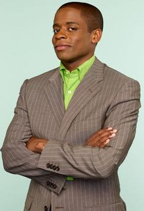

Burton "Gus" Guster
On nearly every episode of Psych, Dulé Hill's Burton "Gus" Guster would receive an embarrassing new nickname courtesy of his best friend and partner, Shawn Spencer (James Roday). It became almost a weekly tradition for Shawn to introduce Gus with a false - but funny - nickname that would usually earn him a frustrated look from Gus. The Psych Gus nicknames are one of the show's highlights for fans, so here's everything to know about SOME of Spencer's nicknames for Gus.
- Die Harder
- Chocolate Columbo
- Gus T.T. Showbiz (Extra T is for Extra Talent
- Ovaltine Jenkins
- Nick Nack
- Weepy Boy Santos
- Lemongrass Gogulope
- Methuselah Honeysuckle
- Felicia Fancybottom
- Longbranch Pennywhistle